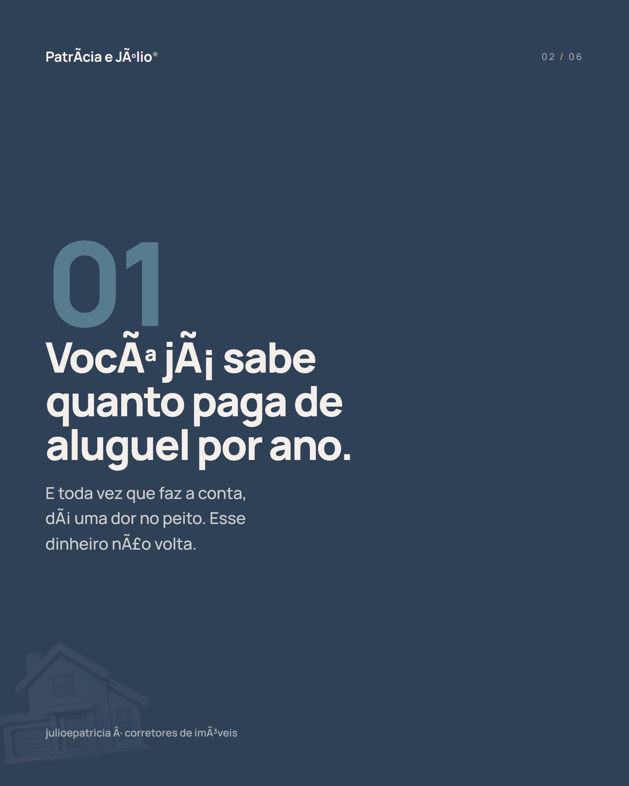

Patrícia e Júlio*
Catálogo de Posts · Julho 2026
Conteúdo visual produzido
Posts e carrosséis prontos para publicar no Instagram, com a identidade visual da marca. Cada peça foi pensada para gerar confiança, quebrar objeções e direcionar pro WhatsApp.
Carrossel 01
"Até quando pagar o imóvel dos outros?"
7 slides focados em sair do aluguel. Copy emocional, dados reais (R$ 90 mil em 5 anos), quebra de objeção sobre financiamento e CTA pro WhatsApp.
Legenda sugerida:
Até quando você vai pagar o imóvel dos outros? 🔑
Todo mês o aluguel sai e não volta. Em 5 anos, com R$ 1.500/mês, são R$ 90 mil que poderiam ser o SEU patrimônio.
A boa notícia: sair do aluguel é mais perto do que parece. Em São Gonçalo e região tem imóvel a partir de R$ 170 mil.
Arraste pro lado e veja por onde começar →
📍 Patrícia Vidal · CRECI 68850
📍 Júlio Aguiar · CRECI 79271
@julio_e_patricia_corretores
#casapropria #sairdoaluguel #imoveis #saogoncalo #niteroi #corretordeimoveis #primeiroimovel #morarbem
Carrossel 02
"3 sinais de que você está pronto pra sair do aluguel"
6 slides com os ícones de chave e casa como elementos visuais protagonistas. Composição editorial escura, copy empática que espelha o que a pessoa sente.

Legenda sugerida:
Você se viu em algum desses?
1️⃣ Já fez a conta de quanto gasta de aluguel por ano (e doeu)
2️⃣ Já pesquisa preço de imóvel "por curiosidade"
3️⃣ Já se imagina num lugar que é seu
Se bateu pelo menos um — você não tá longe.
Arraste pro lado e veja os 3 sinais →
📍 Patrícia Vidal · CRECI 68850
📍 Júlio Aguiar · CRECI 79271
@julio_e_patricia_corretores
#casapropria #sairdoaluguel #primeiroimovel #imoveis #saogoncalo #niteroi #corretordeimoveis #morarbem
Posts com foto real
Autoridade e confiança — com o rosto deles.
4 posts editoriais com fotos reais da Patrícia e do Júlio. Cada um com copy diferente, reforçando atendimento próximo e diferencial humano.

Copies usadas:
Post 1: "Quem tem casa própria não acordou diferente de você."
Post 2: "A gente não vende imóvel. A gente ajuda você a escolher."
Post 3: "Você merece alguém que escuta antes de mostrar."
Post 4: "O próximo passo não precisa ser sozinho."
Post 5: "Dois corretores. Um atendimento de verdade."
Post 6: "A gente tá aqui pra você não errar sozinho."
Todas com CRECI, @handle e tom de autoridade acessível.
Legenda sugerida:
Quem tem casa própria não acordou diferente de você. Só deu o primeiro passo.
O aluguel não volta. A cada mês que passa, é mais dinheiro que sai e não constrói nada.
Mas o primeiro passo pra mudar é mais simples do que parece. Chama a gente no WhatsApp.
📍 São Gonçalo, Niterói e região
Patrícia Vidal · CRECI 68850
Júlio Aguiar · CRECI 79271
#casapropria #imovelproprio #sairdoaluguel #corretordeimoveis #saogoncalo #niteroi